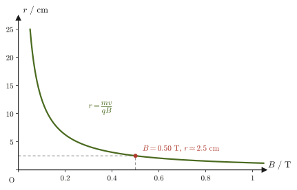
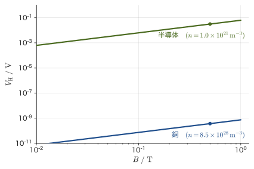

第39章電流と荷電粒子にはたらく磁気力 — ローレンツ力とホール効果
電流を流した導線をU字形磁石の磁極の間に置くと，導線がふっと動く——中学・高校の理科室で誰もが一度は見る実験である．モーターが回るのも，スピーカーのコーンが振動して音を出すのも，すべてこの「磁場が電流に力を及ぼす」という現象が土台になっている．前章（第38章）では，電流が磁場をつくる側の話（ビオ＝サバールの法則，アンペールの法則）を学んだ．本章では逆に，すでにある磁場が電流や運動する荷電粒子に力を及ぼす側の話——アンペール力とローレンツ力——を扱う．
まず，磁場中の直線電流にはたらく力（アンペール力）を外積を使って定義し，2本の平行な導線が互いに引き合ったり反発したりする現象を，その定義から数値まで具体的に導く．次に，磁場中を運動する荷電粒子1個にはたらく力（ローレンツ力）を導入し，これがアンペール力と「本質的に同じもの」であることを，導線内の自由電子1個ずつにはたらく力を足し合わせるという方法で確認する．これは，マクロな法則（アンペール力）がミクロな法則（ローレンツ力）の集積として理解できるという，物理学によく現れる構造の好例である．
ローレンツ力の応用として，一様な磁場に垂直に入射した荷電粒子が等速円運動をすること（サイクロトロン運動），磁場に対して斜めに入射するとらせん運動になること（オーロラの原理）を学ぶ．さらに，電流の流れる導体を磁場の中に置くと，電流にも磁場にも垂直な向きに電圧が生じるホール効果を学ぶ．ホール効果は，半導体中のキャリア（電流を担う粒子）が電子なのか正孔（ホール）なのかを見分け，さらにその密度を測定する強力な手段であり，スマートフォンの磁気センサーやモーターの回転検出など，材料科学・工学の現場で広く使われている．
- アンペール力 $\bm F=I\bm\ell\times\bm B$ の定義と，右手を使った向きの求め方，大きさ $|\bm F|=I\ell B\sin\theta$，高校のフレミングの左手の法則との関係
- 2本の平行な直線電流間にはたらく力の大きさ $F/\ell=\mu_0I_1I_2/(2\pi a)$ の導出と，同方向なら引力・逆方向なら斥力になることの確認（アンペアの単位の歴史的な定義との関係）
- 磁場が電流に力を及ぼす仕組みを，磁力線の重なり・湾曲という描像で定性的に理解する
- ローレンツ力 $\bm F=q\bm v\times\bm B$ の定義と，アンペール力が導線内の自由電子1個ずつにはたらくローレンツ力の総和として書き直せること（ミクロとマクロのつながり）
- 一様磁場中の円運動（半径 $r=mv/(qB)$，周期 $T=2\pi m/(qB)$，サイクロトロン角振動数 $\omega_{\mathrm c}=qB/m$ とサイクロトロン振動数 $f_{\mathrm c}=qB/(2\pi m)$）と，斜め入射のらせん運動
- ホール効果によるホール電圧 $V_{\mathrm H}=IB/(nqt)$ とホール係数 $R_{\mathrm H}=1/(nq)$ の導出，ホール電圧の符号によるキャリア（電子か正孔か）の判定，半導体のキャリア密度測定とホール素子への応用
もとにしたノート：望月泰英『物理学ノート 電磁気学』 pp. 21–25（p.26は白紙）．
39.1 アンペール力 — 磁場中の電流にはたらく力
磁束密度 $\bm B\ [\mathrm{T}]$（テスラ．$1\ \mathrm T=1\ \mathrm{Wb/m^2}=1\ \mathrm{kg/(A\,s^2)}$）の磁場の中に，まっすぐな導線を置き，電流を流す場合を考える．導線の長さを $\ell\ [\mathrm m]$，流れる電流の大きさを $I\ [\mathrm A]$ とする．冒頭の実験のように，磁場中の電流には力がはたらく．この力をアンペール力（Ampère force）または電磁力という．
注意：導線の向きをどう表すか
電流には向きがあるが，電流の大きさ $I$ そのものはスカラーである（第37章 37.1で見たとおり，電流は単位時間あたりに断面を通過する電気量であり，向きを持つ量ではない）．そこで，「電流の向きに，導線に沿って長さ $\ell$ だけ引いた矢印」を $\bm\ell$ という太字のベクトルで表すことにする．$\bm\ell$ の向きが電流の向き，大きさ $|\bm\ell|=\ell$ が導線の長さである．こう約束すると，$I\bm\ell$（スカラー $I$ とベクトル $\bm\ell$ の積）は「大きさ $I\ell$，向きは電流の向き」を表す1つのベクトルになる．以下ではこの $I\bm\ell$ を使って式を書く．
定義39.1 アンペール力
磁束密度 $\bm B$ の一様な磁場の中にある，長さ $\ell$ の直線導線に電流 $I$ を流したとき，導線にはたらく力 $\bm F$ をアンペール力といい，
\begin{equation} \bm F=I\bm\ell\times\bm B \label{eq:39-ampere-def} \end{equation}と定義される（$\bm\ell$ は電流の向きを向く，大きさ $\ell$ のベクトル）．外積 $\times$（大学数学 第15章 15.3）の定義から，$\bm F$ の向きは $\bm\ell$ にも $\bm B$ にも垂直で，右ネジを $\bm\ell$ から $\bm B$ へ回したときにネジが進む向きになる（図39.1）．また，外積の性質 $|\bm a\times\bm b|=|\bm a||\bm b|\sin\theta$（$\theta$ は2つのベクトルのなす角）より，アンペール力の大きさは，$\bm\ell$ と $\bm B$ のなす角を $\theta$ として，
\begin{equation} |\bm F|=I\ell B\sin\theta \label{eq:39-ampere-mag} \end{equation}となる（図39.2）．導線が磁場と平行（$\theta=0$）または反平行（$\theta=180^\circ$）のときは $\sin\theta=0$ となり，力ははたらかない．力が最大になるのは，導線が磁場に垂直（$\theta=90^\circ$）なときである．
磁場が場所によって変わる場合や導線が曲がっている場合は，導線を十分に短い部分 $\dd\bm\ell$ に分け，各部分にはたらく力 $\dd\bm F=I\,\dd\bm\ell\times\bm B$ を足し合わせる（積分する）．式 \eqref{eq:39-ampere-def} は，これを一様な磁場中の直線導線に適用した場合である（例題39.2）．
注意：高校のフレミングの左手の法則との関係
高校では，磁場中の電流にはたらく力の向きを「フレミングの左手の法則」（左手の中指を電流 $I$，人差し指を磁場 $\bm B$ の向きに合わせると，親指が力 $\bm F$ の向きを指す）で求め，大きさを $F=IB\ell$（導線が磁場に垂直なとき）と覚えた．本章の式 \eqref{eq:39-ampere-def} は，この2つを1つにまとめたものである．左手の法則が与える向きは，右手で「$I$ から $B$ へ右ネジを回したときにネジが進む向き」（外積 $I\bm\ell\times\bm B$）とちょうど同じで（演習39.2で確かめる），大きさ $F=IB\ell$ は式 \eqref{eq:39-ampere-mag} で $\theta=90^\circ$ とおいたものである．外積を使うと，斜めに交わる場合の大きさ（$\sin\theta$ が入る）や，曲がった導線への拡張も一つの式で扱える．
例題39.1 アンペール力の大きさ
磁束密度 $B=0.25\ \mathrm T$ の一様な磁場の中に，長さ $\ell=0.80\ \mathrm m$ の直線導線を置き，電流 $I=4.0\ \mathrm A$ を流す．(a) 導線が磁場に垂直なとき，(b) 導線と磁場のなす角が $30^\circ$ のとき，それぞれアンペール力の大きさを求めよ．
解答 式 \eqref{eq:39-ampere-mag} $|\bm F|=I\ell B\sin\theta$ を使う．
(a) $\theta=90^\circ$（垂直）のとき，$\sin90^\circ=1$ だから，
$$ |\bm F|=I\ell B=4.0\ \mathrm A\times0.80\ \mathrm m\times0.25\ \mathrm T=0.80\ \mathrm N $$（単位の確認：$\mathrm{A\cdot m\cdot T}=\mathrm{A\cdot m\cdot(kg/(A\,s^2))}=\mathrm{kg\,m/s^2}=\mathrm N$ で正しい）．
(b) $\theta=30^\circ$ のとき，$\sin30^\circ=0.50$ だから，
$$ |\bm F|=I\ell B\sin30^\circ=4.0\times0.80\times0.25\times0.50\ \mathrm N=0.40\ \mathrm N $$となり，(a) の半分になる．角度が浅くなるほど，磁場が導線を「横切る」成分が減り，力が小さくなることが確認できる．
例題39.2 半円形の導線にはたらく力
半径 $R=0.10\ \mathrm m$ の半円形に曲げた導線を，磁束密度 $B=0.20\ \mathrm T$ の一様な磁場に垂直な平面内に置き，電流 $I=5.0\ \mathrm A$ を流す．導線全体にはたらく力の大きさと向きを求めよ．
解答 座標を，導線のある平面を $xy$ 平面，磁場を紙面手前向き（$+z$ 向き，$\bm B=B\bm e_z$）にとる．導線は原点中心の半径 $R$ の上半円で，電流は点 $(R,0)$ から反時計回りに $(-R,0)$ へ流れるとする．導線上の点は角 $\phi$（$0\le\phi\le\pi$）を使って $\bm r(\phi)=R(\cos\phi,\ \sin\phi,\ 0)$ と表せ，$\phi$ が $\dd\phi$ だけ増えるときの微小部分は，$\bm r$ を $\phi$ で微分して，
$$ \dd\bm\ell=R(-\sin\phi,\ \cos\phi,\ 0)\,\dd\phi $$である．外積の成分計算 $(a,b,0)\times(0,0,B)=(bB,\ -aB,\ 0)$（大学数学 第15章 15.4）を $a=-R\sin\phi,\ b=R\cos\phi$ に使うと，この部分にはたらく力は，
$$ \dd\bm F=I\,\dd\bm\ell\times\bm B=IRB\,(\cos\phi,\ \sin\phi,\ 0)\,\dd\phi $$で，半円の中心から外向き（半径方向）を向く．導線全体では，これを $\phi=0$ から $\pi$ まで足し合わせて，
$$ \bm F=IRB\left(\int_0^\pi\cos\phi\,\dd\phi,\ \int_0^\pi\sin\phi\,\dd\phi,\ 0\right)=IRB\,(0,\ 2,\ 0)=2IRB\,\bm e_y $$となる．力の大きさは $F=2IRB=2\times5.0\ \mathrm A\times0.10\ \mathrm m\times0.20\ \mathrm T=0.20\ \mathrm N$，向きは $+y$ 向き（半円の頂点のほう）である．
確認：半円の両端を直線で結んだ導線（始点 $(R,0)$ から終点 $(-R,0)$ への長さ $2R$ の直線）に同じ電流を流すと，$\bm\ell=-2R\bm e_x$ だから，式 \eqref{eq:39-ampere-def} より $\bm F=I(-2R\bm e_x)\times B\bm e_z=2IRB\,\bm e_y$（$\bm e_x\times\bm e_z=-\bm e_y$）となり，半円の場合とまったく同じ力になる．一様な磁場のなかでは，曲がった導線にはたらく力は，始点と終点を結ぶ直線導線にはたらく力に等しい．
応用：モーターとスピーカー
モーターは，磁石がつくる磁場のなかに置いた長方形のコイルに電流を流し，コイルの向かい合う2辺が受ける逆向きのアンペール力（一対の偶力）でコイルを回す装置である．コイルが半回転するたびに，整流子とブラシで電流の向きを切り替えて，回転の向きが変わらないようにしてある．スピーカーは，永久磁石がつくる磁場のなかに置いたコイル（ボイスコイル）に，音声信号の交流電流を流し，アンペール力でコイルとそれにつながった振動板（コーン）を前後に動かして空気を振動させる．電流の向きが変わるたびに力の向きも変わるので，振動板は電流の変化にあわせて振動する．どちらも $\dd\bm F=I\,\dd\bm\ell\times\bm B$ を，コイルの導線全体にわたって足し合わせたものである．
39.2 2本の平行導線間にはたらく力
アンペール力の典型的で重要な例として，平行に張られた2本の直線導線が及ぼし合う力を考える．導線1と導線2を，距離 $a\ [\mathrm m]$ 離して平行に張り，それぞれ電流 $I_1,\ I_2\ [\mathrm A]$ を流す．第38章 38.3で導いたように，無限に長い直線電流 $I_1$ から距離 $a$ の点につくられる磁場（磁界）の大きさは，
$$ H=\frac{I_1}{2\pi a} $$であった（$H\ [\mathrm{A/m}]$ は磁場，磁束密度とは $B=\mu_0H$ の関係で結ばれる．$\mu_0=1.256\,637\,062\,12\times10^{-6}\ \mathrm{N/A^2}$ は真空の透磁率）．したがって，導線1が導線2の位置につくる磁束密度は $B_1=\mu_0H=\mu_0I_1/(2\pi a)$ であり，向きは導線2の位置で導線1を中心とする円の接線方向（右ねじの法則）を向く．
39.2.1 電流の向きが同じ場合
導出：同方向の平行電流間の力
導線2（長さ $\ell$，電流 $I_2$）は，導線1がつくる磁場 $B_1$ の中に置かれているのだから，式 \eqref{eq:39-ampere-def} のアンペール力を受ける．導線2は導線1と平行（$\theta=90^\circ$，$B_1$ は導線と垂直）なので，式 \eqref{eq:39-ampere-mag} より大きさは，
$$ F=\ell I_2 B_1=\ell I_2\cdot\frac{\mu_0I_1}{2\pi a}=\frac{\mu_0\ell I_1I_2}{2\pi a} $$力の向きは，座標を置いて外積で確かめる（図39.3(a)）．導線に沿った向きから見た断面で考える．導線1を原点（$z$ 軸）に，導線2を $x=a$ の位置に置く．右向きを $x$ 軸，上向きを $y$ 軸，紙面手前向きを $z$ 軸の正の向きにとる（右手系）．電流はどちらも $+z$ 向き（同方向）とする．
(1) 導線1の磁場は，右ネジの法則により導線1のまわりを反時計回りに巡る．導線2の位置 $(a,0,0)$ では $+y$ 向きなので，$\bm B_1=B_1\bm e_y$（$B_1=\mu_0I_1/(2\pi a)$）．
(2) 導線2の $\bm\ell$ は $+z$ 向きで $\bm\ell=\ell\bm e_z$ だから，$\bm e_z\times\bm e_y=-\bm e_x$ を使って，
$$ \bm F=I_2\,\ell\bm e_z\times B_1\bm e_y=-I_2\ell B_1\,\bm e_x $$となる．$-x$ 向きは，導線2から導線1（原点）へ向かう向きだから，引力である．
(3) 導線1にはたらく力も調べよう．導線2の磁場は，導線1の位置（導線2から見て $-x$ 側）では $-y$ 向きで，$\bm B_2=-B_2\bm e_y$（$B_2=\mu_0I_2/(2\pi a)$）．導線1の受ける力は $\bm F'=I_1\ell\bm e_z\times(-B_2\bm e_y)=+I_1\ell B_2\,\bm e_x$ で，導線2へ向かう．大きさ $I_1\ell B_2=\mu_0\ell I_1I_2/(2\pi a)$ は導線2の受ける力に等しく，向きは逆である．すなわち2本の導線は，作用・反作用の法則（ニュートンの第3法則）を満たす大きさの等しい逆向きの力を及ぼし合う．
（導出終わり）
39.2.2 電流の向きが逆の場合
導線2に流れる電流の向きだけを逆（$-z$ 向き，$\bm\ell=-\ell\bm e_z$）にする．導線1がつくる磁場は変わらず導線2の位置で $\bm B_1=B_1\bm e_y$ だから，導線2にはたらく力は，
$$ \bm F=I_2(-\ell\bm e_z)\times B_1\bm e_y=+I_2\ell B_1\,\bm e_x $$となる．$+x$ 向きは導線1から遠ざかる向きである．力の大きさは変わらず，
$$ F=\frac{\mu_0\ell I_1I_2}{2\pi a} $$のままだが，向きが反転して斥力になる（図39.4）．導線1が導線2の磁場から受ける力も，同じ大きさで導線2から遠ざかる向き（$-x$ 向き）になる．まとめると，平行な2本の直線電流は，同方向なら引き合い，逆方向なら反発し合う．力の大きさはどちらの場合も同じ式で与えられる．
公式39.1 平行な2直線電流間にはたらく力
距離 $a$ だけ離れた2本の平行な直線導線に，それぞれ電流 $I_1,I_2$ を流すとき，長さ $\ell$ あたりに働くアンペール力の大きさは，
\begin{equation} F=\frac{\mu_0\ell I_1I_2}{2\pi a} \label{eq:39-parallel-force} \end{equation}であり，電流の向きが同じなら引力，逆なら斥力になる．
応用：アンペアの定義と2019年のSI改定
式 \eqref{eq:39-parallel-force} は，歴史的に電流の単位アンペア（A）を定義するために使われてきた．2019年にSI（国際単位系）が改定される以前は，「真空中に1 mの間隔で平行に置かれた，無限に長く断面積の無視できる2本の直線導体に，それぞれ等しい一定の電流を流したとき，導体の長さ1 mごとに $2\times10^{-7}\ \mathrm N$ の力を及ぼし合うような電流」を1アンペアと定義していた．この定義のもとでは，$I_1=I_2=1\ \mathrm A,\ a=1\ \mathrm m$ を式 \eqref{eq:39-parallel-force} に代入した値がちょうど $2\times10^{-7}\ \mathrm{N/m}$ になるように，$\mu_0$ の値を
$$ \mu_0=4\pi\times10^{-7}\ \mathrm{N/A^2}\ (\text{定義値，2019年改定前}) $$と正確に定めていたのである（$4\pi\times10^{-7}\times1\times1/(2\pi\times1)=2\times10^{-7}$ で確かに一致する）．実際には，この定義は電流天秤とよばれる精密な装置で実現されていた．
2019年のSI改定では，逆に電気素量 $e=1.602\,176\,634\times10^{-19}\ \mathrm C$ を定義値として固定し，$1\ \mathrm C=1\ \mathrm{A\,s}$ の関係を通じて電流の単位を定め直した．1 Aは「1秒間に $1/e\approx6.24\times10^{18}$ 個の素電荷が断面を通過する電流」にあたる．現在は，電圧と抵抗の量子標準（ジョセフソン効果と量子ホール効果）を組み合わせてオームの法則から電流を実現するほか，単電子デバイスで素電荷を1個ずつ流す方法の研究も進んでいる．この結果，$\mu_0$ はもはや定義値ではなく，実験で測定する量になった．本書で使う $\mu_0=1.256\,637\,062\,12\times10^{-6}\ \mathrm{N/A^2}$ は，かつての定義値 $4\pi\times10^{-7}\approx1.256\,637\,061\,4\times10^{-6}\ \mathrm{N/A^2}$ と有効数字9桁まで一致するほど近いが，厳密には一致せず，相対的なずれは約 $5\times10^{-10}$ である（測定値の相対不確かさ（CODATA 2018）は約 $1.5\times10^{-10}$）——これは，電流の基準が「2本の導線間にはたらく力」から「電気素量という自然の定数」へと移り変わったことの直接の帰結である．
例題39.3 平行な送電線にはたらく力とアンペアの旧定義
間隔 $a=0.10\ \mathrm m$ で平行に張られた2本の直線導線に，同じ向きにそれぞれ $I_1=I_2=15\ \mathrm A$ の電流を流す．(a) 導線の長さ1 mあたりにはたらく力の大きさと向きを求めよ．(b) 電流の向きを逆にすると，力はどうなるか．(c) アンペアの旧定義（$I_1=I_2=1\ \mathrm A,\ a=1\ \mathrm m$）のとき，長さ1 mあたりの力が $2\times10^{-7}\ \mathrm N$ になることを，式 \eqref{eq:39-parallel-force} から確かめよ．
解答 (a) 式 \eqref{eq:39-parallel-force} より，長さ $\ell=1.0\ \mathrm m$ あたりの力は，
$$ \frac{F}{\ell}=\frac{\mu_0I_1I_2}{2\pi a}=\frac{1.256\,637\times10^{-6}\times15\times15}{2\pi\times0.10}\ \mathrm{N/m} $$ここで $\mu_0/(2\pi)\approx2.0\times10^{-7}\ \mathrm{N/A^2}$ であることを使うと，計算しやすい：
$$ \frac{F}{\ell}\approx2.0\times10^{-7}\times\frac{15\times15}{0.10}\ \mathrm{N/m}=2.0\times10^{-7}\times2250\ \mathrm{N/m}\approx4.5\times10^{-4}\ \mathrm{N/m} $$電流の向きが同じなので，力は引力である．長さ1 mあたり約 $0.45\ \mathrm{mN}$ とごく小さい力であり，これが，かつてアンペアを高精度に実現するための実験（電流天秤）が精密な装置を必要とした理由でもある．
(b) 電流を逆向きにしても，力の大きさは式 \eqref{eq:39-parallel-force} のとおり変わらず $4.5\times10^{-4}\ \mathrm{N/m}$ で，向きだけが反転して斥力になる（2本は遠ざかる向きに力を受ける）．
(c) 旧定義の値 $\mu_0=4\pi\times10^{-7}\ \mathrm{N/A^2}$ を代入すると，
$$ \frac{F}{\ell}=\frac{4\pi\times10^{-7}\times1\times1}{2\pi\times1}\ \mathrm{N/m}=2\times10^{-7}\ \mathrm{N/m} $$となり，たしかに旧定義の数値と一致する．現在の測定値 $\mu_0=1.256\,637\,062\,12\times10^{-6}\ \mathrm{N/A^2}$ を使っても $2.000\,000\,001\times10^{-7}\ \mathrm{N/m}$ で，有効数字9桁まで $2\times10^{-7}\ \mathrm{N/m}$ のままである．
39.3 アンペール力はなぜ生じるのか — 磁力線の描像
式 \eqref{eq:39-ampere-def} $\bm F=I\bm\ell\times\bm B$ は，アンペール力の大きさと向きを正しく与えるが，「なぜ磁場中の電流に力がはたらくのか」という素朴な疑問には，外積の計算だけでは答えられない．ここでは，磁力線（磁場の向きに沿って描いた曲線で，密なところほど磁場が強いことを表す）という描像を使って，力が生じる仕組みを定性的にイメージしてみよう．
なぜ？：磁力線の重なりと湾曲によるアンペール力の描像
棒磁石（上側がN極，下側がS極）の間に，導線を奥行き方向に貫くように置き，電流 $I$ を紙面の手前から奥へ流す場合を考える（図39.5(a)）．磁石は，N極からS極へ向かう，ほぼ一様な磁場 $\bm H$（上から下向き）をつくる．一方，導線に流れる電流 $I$ もまた，導線を取り巻く同心円状の磁場をつくる（第38章 38.5のアンペールの法則）．右ネジの法則により，奥向きの電流のまわりの磁場は時計回りに巡る．
この2つの磁場は，空間の同じ場所で重なり合い（磁場は重ね合わせできるベクトル量である），単純な足し算になる．導線の右側では，電流の磁場も下向きで磁石の磁場と同じ向きを向くため強め合い，左側では上向きで逆向きを向くため弱め合う（図39.5(b)）．
合成した磁場の全体図を描くと，磁力線は，磁場が強い右側では密に，弱い左側では疎になり，導線のまわりで曲がる（図39.5(c)）．磁力線は，ゴムひものように「まっすぐになろう（張力を持つ）」とする性質と，「隣り合う磁力線どうしが互いに押しのけ合い，混み合うのを避けよう」とする性質（圧力）を併せ持つ，と考えると理解しやすい．混み合った右側の磁力線が導線を押す力が，まばらな左側から押し返す力より大きいので，導線は磁力線の密な側（磁場の強い側）から疎な側（弱い側）へ押しやられる——これがアンペール力の正体である，というのがこの描像の主張である．
外積での検算：座標を，右向きを $x$，上向きを $y$，紙面手前向きを $z$ にとると，導線の向き（電流の向き）は奥向きの $-\bm e_z$，磁場は下向きの $-\bm e_y$ だから，$\bm F=I\bm\ell\times\bm B=I\ell B\,(-\bm e_z)\times(-\bm e_y)=I\ell B\,\bm e_z\times\bm e_y=-I\ell B\,\bm e_x$ となり，左向き（磁場の強い右側から弱い左側へ）で，上の描像と一致する．
例題39.4 磁力線の描像で引力・斥力を説明する
39.2節の2つの場合（電流が同方向・逆方向の2本の平行導線）について，磁力線の重なりの描像（図39.5と同じ考え方）を使って，力が引力になるか斥力になるかを定性的に説明せよ．
解答 導線に沿って見た断面図（図39.3，図39.4の(b)）で考える．各導線のつくる磁場は導線を中心とする同心円状で，右ネジの法則により，紙面手前向きの電流のまわりでは反時計回り，紙面奥向きの電流のまわりでは時計回りに巡る．
(i) 同方向（どちらも手前向き）の場合．2本の間では，導線1の磁場は上向き，導線2の磁場は下向きで，互いに逆向きだから弱め合う．外側では，導線1の左側でも導線2の右側でも2本の磁場が同じ向き（左側では下向き，右側では上向き）で強め合う．磁力線は強い側（外側）から弱い側（間）へ導線を押すので，2本は近づく向きに力を受ける——引力である．
(ii) 逆方向（導線1は手前向き，導線2は奥向き）の場合．2本の間では，導線1の磁場も導線2の磁場も上向きで強め合い，外側では逆向きで弱め合う．配置が(i)の場合とちょうど逆転するので，強い側（間）から弱い側（外側）へ押され，2本は遠ざかる向きに力を受ける——斥力である．
これらは，外積の計算から得た「同方向なら引力，逆方向なら斥力」という結論（39.2節）と一致する．
39.4 ローレンツ力
39.1–39.3節では，磁場が導線を流れる電流（多数の荷電粒子の集団的な流れ）に及ぼす力を考えた．では，磁場中を運動する荷電粒子1個には，どんな力がはたらくのだろうか．
定義39.2 ローレンツ力
磁束密度 $\bm B$ の磁場の中を，速度 $\bm v\ [\mathrm{m/s}]$ で運動する電荷 $q\ [\mathrm C]$ に働く力をローレンツ力（Lorentz force）といい，
\begin{equation} \bm F=q\bm v\times\bm B \label{eq:39-lorentz-def} \end{equation}と定義される．外積の性質から，その大きさは，$\bm v$ と $\bm B$ のなす角を $\theta$ として，
\begin{equation} |\bm F|=qvB\sin\theta \label{eq:39-lorentz-mag} \end{equation}である（図39.6）．$\bm F$ は，$\bm v$ にも $\bm B$ にも常に垂直である——このことは39.6節で見るように，ローレンツ力が仕事をしないという重要な性質につながる．
注意：電場もあるときの力
電場 $\bm E$ と磁場 $\bm B$ が同時にあるとき，電荷 $q$ の粒子が受ける力は，電場の力 $q\bm E$（第35章）と磁場の力の和，
$$ \bm F=q(\bm E+\bm v\times\bm B) $$である．本書では，磁場から受ける項 $q\bm v\times\bm B$ をローレンツ力とよぶ（電場の力まで含めた全体をローレンツ力とよぶ流儀もある）．電場の力 $q\bm E$ は粒子に仕事をするが，$q\bm v\times\bm B$ は次の39.6節で見るように仕事をしない．この対比が，磁場が粒子を「加速」ではなく「曲げる」だけである理由である．
発展：ローレンツ力を電場と磁場の類似性から見る（探究的な考察）
ローレンツ力 $\bm F=q\bm v\times\bm B$ は，ここでは磁場の中を運動する電荷にはたらく力として天下り的に与えたが，実は，電流（＝運動する電荷の集まり）がつくる磁場の式（ビオ＝サバールの法則）と，磁石どうしが及ぼし合う力の式との類似性から，形式的に「導く」こともできる．厳密な導出ではなく，電場と磁場の間に成り立つ美しい対応関係を垣間見るための考察として読んでほしい．
導線の微小部分 $\dd\bm x$（電流 $I$ の向き）が，距離 $r$ 離れた点につくる磁場は，ビオ＝サバールの法則により，
$$ \dd\bm H=\frac{I}{4\pi r^2}\left(\dd\bm x\times\frac{\bm r}{r}\right) $$である（第38章 38.2のビオ＝サバールの法則．$\bm r$ は微小部分から着目する点へ向かう位置ベクトル）．導線内では，電荷 $-e$ をもつ自由電子（$e\gt0$ は電気素量）が平均速度 $\langle\bm v\rangle$（大きさ $\langle v\rangle$）で運動しており，電流は $I=en\langle v\rangle S$（$n$：自由電子密度，$S$：断面積，第37章 37.1）と表せる．電子の運動の向きは電流の向きと逆なので，$\dd\bm x=-\dd x\,\langle\bm v\rangle/\langle v\rangle$ である．これらを代入すると，
$$ \dd\bm H=\frac{en\langle v\rangle S}{4\pi r^2}\left(-\dd x\cdot\frac{\langle\bm v\rangle}{\langle v\rangle}\times\frac{\bm r}{r}\right)=-\frac{enS\,\dd x}{4\pi r^2}\left(\langle\bm v\rangle\times\frac{\bm r}{r}\right) $$となる．ここで，$nS\,\dd x$ は微小部分 $\dd x$ に含まれる自由電子の個数だから，この式を $nS\,\dd x$ で割れば，電子1個（電荷 $-e$）が平均としてつくる磁場が得られる：
$$ \langle\bm H\rangle=-\frac{e}{4\pi r^2}\left(\langle\bm v\rangle\times\frac{\bm r}{r}\right) $$電子1個の場合の一般化として，速度 $\bm v$ で運動する電荷 $q$ がつくる磁場は，
$$ \bm H=\frac{q}{4\pi r^2}\left(\bm v\times\frac{\bm r}{r}\right) $$と書けることになる（図39.7(a)）．
ここで，形式的な思考実験として，第38章 38.1で導入した大きさ $m\ [\mathrm{Wb}]$ の「磁荷」（クーロンの法則における点電荷に相当する，磁場の源になる仮想的な点状の磁極．ここでの $m$ は質量ではない．自然界に単独の磁荷（モノポール）が実在するかどうかは，現在も実験的に探索が続いている未解決の問題であり，ここではあくまで計算上の道具として使う）を，電荷 $q$ から位置 $\bm r$ の点に置いたとする．磁荷が磁場 $\bm H$ から受ける力は $\bm f'=m\bm H$ である（単位は $\mathrm{Wb\cdot A/m}=\mathrm{J/m}=\mathrm N$ で，力の単位に一致する）．したがって，この磁荷が電荷のつくる磁場 $\bm H$ から受ける力は，
$$ \bm f'=m\bm H=\frac{mq}{4\pi r^2}\left(\bm v\times\frac{\bm r}{r}\right)=q\bm v\times\underbrace{\left(\frac{m}{4\pi r^2}\cdot\frac{\bm r}{r}\right)}_{\displaystyle -\bm B} $$と書ける．最後の変形は，$\bm v\times(\cdots)$ の形を作るために，スカラー $m/(4\pi r^2)$ を $\bm r/r$ にかけた部分を1つのベクトルとみなし，それを $-\bm B$ と名づけただけである．すなわち，
$$ \bm B\equiv-\frac{m}{4\pi r^2}\cdot\frac{\bm r}{r} \qquad(\bm B\ \text{と}\ \bm r\ \text{は逆向き}) $$（$m/(4\pi r^2)$ の単位は $\mathrm{Wb/m^2}=\mathrm T$ で，磁束密度の単位に一致する．この $\bm B$ は，磁荷 $m$ が電荷の位置につくる磁束密度にあたる．磁荷から見て電荷は $-\bm r$ の側にあるので，$\bm B$ は $\bm r$ と逆向きになる．）ここで，電荷と磁荷の間でも作用・反作用の法則（ニュートンの第3法則）が成り立つと仮定すると，電荷 $q$ が磁荷から受ける力 $\bm f$ は，$\bm f'$ の反作用として，
$$ \bm f=-\bm f'=-q\bm v\times(-\bm B)=q\bm v\times\bm B $$となり，ローレンツ力の式 \eqref{eq:39-lorentz-def} と同じ形が得られる（図39.7(b)）．この考察は，「ローレンツ力とは，運動する電荷がつくる磁場から，磁荷が力 $\bm f'$ を受けることの反作用 $\bm f=-\bm f'$ である」という，電場と磁場の対称性を強調した見方を与えている．ただし，実際には孤立した磁荷は（少なくともこれまでのところ）観測されておらず，この議論は物理的に厳密な導出ではなく，$\bm F=q\bm v\times\bm B$ という結果に到達するための発見的な——しかし電磁気学の構造の美しさを感じさせる——道筋として理解しておこう．
例題39.5 陽子にはたらくローレンツ力
磁束密度 $B=0.50\ \mathrm T$ の一様な磁場に垂直に，速さ $v=2.0\times10^{6}\ \mathrm{m/s}$ で陽子（電荷 $q=+e=1.602\times10^{-19}\ \mathrm C$，質量 $m_{\mathrm p}=1.673\times10^{-27}\ \mathrm{kg}$）が入射した．陽子にはたらくローレンツ力の大きさと，その瞬間の加速度の大きさを求めよ．
解答 $\bm v\perp\bm B$（$\theta=90^\circ$）なので，式 \eqref{eq:39-lorentz-mag} より，
$$ F=qvB=1.602\times10^{-19}\ \mathrm C\times2.0\times10^{6}\ \mathrm{m/s}\times0.50\ \mathrm T\approx1.6\times10^{-13}\ \mathrm N $$ニュートンの運動方程式 $F=m_{\mathrm p}a$ より，加速度は，
$$ a=\frac{F}{m_{\mathrm p}}=\frac{1.602\times10^{-13}\ \mathrm N}{1.673\times10^{-27}\ \mathrm{kg}}\approx9.6\times10^{13}\ \mathrm{m/s^2} $$力そのものは $10^{-13}\ \mathrm N$ 程度ときわめて小さいが，陽子の質量も同程度に小さいため，加速度は地球の重力加速度 $g=9.8\ \mathrm{m/s^2}$ の実に $10^{13}$ 倍近くという桁外れに大きな値になる——これが，荷電粒子が磁場中で急激に向きを変えられる理由である．
39.5 ローレンツ力とアンペール力の等価性
39.1節ではアンペール力 $\bm F=I\bm\ell\times\bm B$ を，導線という「マクロな物体」にはたらく力として天下り的に定義した．39.4節ではローレンツ力 $\bm F=q\bm v\times\bm B$ を，荷電粒子1個という「ミクロな粒子」にはたらく力として定義した．この2つの式は，実は独立な法則ではなく，アンペール力は，導線内を運動する自由電子1個ずつが受けるローレンツ力の総和にほかならないことを，ここで直接確かめる．
導出：アンペール力を自由電子1個ずつのローレンツ力の総和として書き直す
長さ $\ell$，断面積 $S$ の導線（体積 $S\ell$）が，磁束密度 $\bm B$ の磁場の中にある．導線内の自由電子（電荷 $-e$，密度 $n$）が平均速度 $\bm v$ で動いているとする．電子1個が受けるローレンツ力は，式 \eqref{eq:39-lorentz-def} より $-e\,\bm v\times\bm B$ である．体積 $S\ell$ の中には $nS\ell$ 個の自由電子があり，すべて同じ力を受けるとみなせるから，導線全体にはたらく力は，1個ぶんの力を $nS\ell$ 倍したものになる：
$$ \bm F=\sum\left(-e\,\bm v\times\bm B\right)=(nS\ell)\cdot(-e)\,(\bm v\times\bm B)=\ell\,\bigl(-enS\,\bm v\bigr)\times\bm B $$（1つ目の等号は電子ごとの力の総和，2つ目は $nS\ell$ 個ぶんをまとめたものである．3つ目では，数（スカラー）の $nS\ell\cdot(-e)$ を $\ell$ と $-enS$ に分け，$-enS$ を $\bm v$ にかけて1つのベクトル $-enS\,\bm v$ にした．ここで「$\cdot$」は数どうし，または数とベクトルの積であり，外積 $\times$ をとる相手は $-enS\,\bm v$ と $\bm B$ だけである）．
次に，$-enS\,\bm v$ が電流とどうつながるかを見る．導線に沿って電流の向きを向く単位ベクトルを $\bm e_\ell$（$\bm\ell=\ell\,\bm e_\ell$）とする．電子は電流と逆向きに動くから，電子の速さを $v=|\bm v|$ として $\bm v=-v\,\bm e_\ell$ と書ける．したがって，
$$ -enS\,\bm v=-enS\,(-v\,\bm e_\ell)=envS\;\bm e_\ell=I\,\bm e_\ell $$となる（最後の等号で第37章 37.1の関係 $I=envS$ を使った）．電荷 $-e$ の電子が電流と逆向きに動くことは，向きだけを見れば，正の電荷が電流の向きに流れることと同じである．これを代入すると，
\begin{equation} \bm F=\ell\,(I\,\bm e_\ell)\times\bm B=I\,(\ell\,\bm e_\ell)\times\bm B=I\bm\ell\times\bm B \label{eq:39-equivalence} \end{equation}となり，たしかに39.1節のアンペール力の定義（式 \eqref{eq:39-ampere-def}）と完全に一致する（単位の確認：$enSv$ は $\mathrm{C\,m^{-3}\,m^2\,m/s}=\mathrm{C/s}=\mathrm A$ なので，$\ell\cdot enSv\cdot B$ は $\mathrm{m\cdot A\cdot T}=\mathrm N$ となり，力の単位に一致する）．電子の運動，各電子が受ける力，合力の関係を図39.8に示す．
（導出終わり）
定理39.1 ローレンツ力とアンペール力の等価性
導線にはたらくアンペール力 $\bm F=I\bm\ell\times\bm B$ は，導線内の自由電子1個ずつにはたらくローレンツ力 $-e\bm v\times\bm B$ の総和に等しい．すなわち，ローレンツ力とアンペール力は，見かけ上は別の法則のように見えるが，本質的には同じ1つの物理法則——磁場中を運動する電荷にはたらく力——の，ミクロな表現とマクロな表現である．
なぜ？：電子が受けた力が，どうして導線全体にはたらくのか
ローレンツ力を直接受けるのは自由電子だが，実際に動くのは導線（固体）全体である．磁場から横向きの力を受けた電子は導線の一方の側面に偏り，反対側の面には正の電荷が残る．すると導線を横切る向きの電場（ホール電場，39.8節）が生じ，この電場が電子にも，結晶格子をつくる正イオンにも力を及ぼす．定常状態では，電子が受けるローレンツ力とホール電場の力がつり合い，電子は導線に沿ってまっすぐ進み続ける．そのとき，ホール電場が正イオンに及ぼす力が，電子が受けた力を格子に伝える役目をする．こうして，電子が受ける力の総和が，導線全体にはたらくアンペール力になる．
例題39.6 銅導線の中の自由電子——ミクロとマクロのつながりを数値で見る
直径 $1.0\ \mathrm{mm}$（半径 $r=5.0\times10^{-4}\ \mathrm m$）の銅導線に，電流 $I=10\ \mathrm A$ を流す．銅の自由電子密度を $n=8.5\times10^{28}\ \mathrm{m^{-3}}$ とする．(a) 自由電子の平均速度（ドリフト速度）$v_{\mathrm d}$ を求めよ．(b) この導線が磁束密度 $B=0.20\ \mathrm T$ の一様な磁場に垂直に置かれ，長さ $1.0\ \mathrm m$ の部分にはたらくアンペール力を，(i) 式 \eqref{eq:39-ampere-mag} から直接計算する方法と，(ii) その長さに含まれる自由電子1個あたりのローレンツ力を求めて，電子の総数をかけて合計する方法の，2通りで求め，一致することを確認せよ．
解答 (a) 導線の断面積は $S=\pi r^2=\pi\times(5.0\times10^{-4}\ \mathrm m)^2\approx7.85\times10^{-7}\ \mathrm{m^2}$．電流の定義 $I=env_{\mathrm d}S$（第37章 37.1）を $v_{\mathrm d}$ について解くと，
$$ v_{\mathrm d}=\frac{I}{enS}=\frac{10\ \mathrm A}{1.602\times10^{-19}\ \mathrm C\times8.5\times10^{28}\ \mathrm{m^{-3}}\times7.85\times10^{-7}\ \mathrm{m^2}}\approx9.3\times10^{-4}\ \mathrm{m/s} $$となる．これは，1秒間にわずか1 mmにも満たない距離である——電気信号がほぼ光速で伝わるのに対し，電子自身の平均移動速度（ドリフト速度）はこれほど遅い，というのは電磁気学の有名な事実である（信号が速く伝わるのは，導線中のすべての電子がほぼ同時に動き始めるためであり，個々の電子が高速で移動して届けているわけではない）．
(b)(i) 式 \eqref{eq:39-ampere-mag} より（$\theta=90^\circ$），
$$ F=\ell IB=1.0\ \mathrm m\times10\ \mathrm A\times0.20\ \mathrm T=2.0\ \mathrm N $$(ii) 長さ $\ell=1.0\ \mathrm m$ に含まれる自由電子の個数は $N=nS\ell=8.5\times10^{28}\times7.85\times10^{-7}\times1.0\approx6.68\times10^{22}$ 個．電子1個が受けるローレンツ力の大きさは，式 \eqref{eq:39-lorentz-mag}（$\theta=90^\circ$）より $f=ev_{\mathrm d}B=1.602\times10^{-19}\times9.3\times10^{-4}\times0.20\approx3.0\times10^{-23}\ \mathrm N$．したがって合力は，
$$ F=Nf\approx6.68\times10^{22}\times3.0\times10^{-23}\ \mathrm N\approx2.0\ \mathrm N $$となり，(i)の計算と一致する．電子1個あたりの力はきわめて小さいが，$10^{22}$ 個という膨大な数の電子が力を合わせることで，導線全体には目に見える大きさの力（2.0 N，約200 gの重さに相当）が生じる．
39.6 一様な磁場中の荷電粒子の円運動 — サイクロトロン運動
一様な磁束密度 $\bm B$ の磁場に，電気量 $q$，質量 $m$ の荷電粒子が，磁場に垂直な向きに速さ $v$ で入射した場合を考える．ローレンツ力の大きさは式 \eqref{eq:39-lorentz-mag} で $\theta=90^\circ$ とおいて $F=qvB$（一定）であり，向きは常に速度 $\bm v$ に垂直である．
イメージ：ローレンツ力はなぜ仕事をしないのか，なぜ円運動になるのか
力がする仕事率は $\bm F\cdot\bm v$（力と速度の内積）で与えられる．ローレンツ力は定義から常に $\bm v$ に垂直（$\bm F\perp\bm v$）なので，$\bm F\cdot\bm v=0$——つまりローレンツ力は仕事をしない．仕事をしない力は運動エネルギーを変化させない（仕事とエネルギーの関係，第4章）ので，磁場だけから力を受けている荷電粒子の速さ $v$（したがって運動エネルギー）は，運動の間ずっと変化しない．変わるのは速度の向きだけである．
では，どんな軌道になるのか．いま粒子は磁場に垂直に入射したので，$\bm F\perp\bm B$ より力は磁場に垂直な平面内にとどまり，運動はこの平面内で起こる．力の大きさ $F=qvB$ は一定で，向きは常に速度に垂直だから，粒子は，速度に垂直な向きに一定の大きさ $a=F/m=qvB/m$ の加速度を受け続ける．速さ $v$ が一定で速度に垂直な加速度の大きさが一定なら，軌道の曲率半径は $v^2/a=mv/(qB)$ で一定になる．曲率半径が一定の軌道は円である（第5章 5.4の等速円運動）．
この力は，円の中心を向く向心力としてはたらく．円の半径を $r$ とすると，向心力の大きさは $F=mv^2/r$（第5章 5.4の定義5.2と公式5.5）だから，これがローレンツ力 $F=qvB$ に等しいとおいて，
$$ m\cdot\frac{v^2}{r}=qvB $$両辺を $v$ で割ってから $r$ について解くと（$v\neq0$ より許される），
$$ \frac{mv}{r}=qB \qquad\therefore\ r=\frac{mv}{qB} $$円周の長さ $2\pi r$ を速さ $v$ で一周するのにかかる時間（周期）$T$ は，
$$ T=\frac{2\pi r}{v}=\frac{2\pi}{v}\cdot\frac{mv}{qB}=\frac{2\pi m}{qB} $$となる（図39.9）．
公式39.2 一様磁場中の円運動の半径と周期
質量 $m$，電気量 $q$ の荷電粒子が，磁束密度 $B$ の一様な磁場に垂直に，速さ $v$ で入射すると，等速円運動をする．その半径と周期は，
\begin{equation} r=\frac{mv}{qB}\ [\mathrm m], \qquad T=\frac{2\pi m}{qB}\ [\mathrm s] \label{eq:39-circular} \end{equation}である．周期 $T$ は速さ $v$ にも半径 $r$ にもよらず，粒子の質量・電気量と磁束密度だけで決まることに注意しよう（半径は速さに比例して大きくなるが，1周にかかる時間は変わらない）．回る向きは $\bm F=q\bm v\times\bm B$ で決まり，$q\gt0$ の粒子は，$\bm B$ の矢の先の側（$\bm B$ が自分に向かってくる側）から見て時計回り，$q\lt0$ の粒子は反時計回りに回る（図39.9，例題39.7で確かめる）．半径と磁束密度の関係は図39.10に示す．
定義39.3 サイクロトロン角振動数とサイクロトロン振動数
式 \eqref{eq:39-circular}の周期 $T$ から決まる2つの量
\begin{equation} \omega_{\mathrm c}\equiv\frac{2\pi}{T}=\frac{qB}{m}\ [\mathrm{rad/s}],\qquad f_{\mathrm c}\equiv\frac1T=\frac{\omega_{\mathrm c}}{2\pi}=\frac{qB}{2\pi m}\ [\mathrm{Hz}] \label{eq:39-cyclotron} \end{equation}を，それぞれサイクロトロン角振動数（cyclotron angular frequency），サイクロトロン振動数（cyclotron frequency）という．$\omega_{\mathrm c}$ は，この円運動を回転運動として見たときの角速度の大きさそのもので，$f_{\mathrm c}$ は1秒あたりの回転数である．磁束密度 $1\ \mathrm T$ あたりでは，電子で $f_{\mathrm c}/B=e/(2\pi m_{\mathrm e})\approx28\ \mathrm{GHz/T}$，陽子で $e/(2\pi m_{\mathrm p})\approx15\ \mathrm{MHz/T}$ である．
荷電粒子を加速する円形加速器「サイクロトロン」は，粒子が磁場中で描くこの円運動を利用し，周波数 $f_{\mathrm c}$ の交流電場で粒子を周期的に加速する装置である（半径が大きくなっても周期 $T$ が変わらないという式 \eqref{eq:39-circular}の性質が，加速のタイミングを一定に保てる理由になっている）．ただし，粒子の速さが光速に近づく高エネルギーでは，相対論的に質量が $m\to\gamma m$ と増えて周期が長くなり，この単純な方式は使えなくなる（周波数や磁場を調整するシンクロサイクロトロン，シンクロトロンへ発展した）．本書は $v\ll c$ の非相対論的な範囲だけを扱う．

例題39.7 運動方程式から円運動の半径と周期を直接導く
質量 $m$，電荷 $q$ の粒子が，一様な磁場 $\bm B=B\bm e_z$ の中を，初速度 $\bm v(0)=(v_0,\,0,\,0)$（$v_0\gt0$）で運動する．ローレンツ力だけを受けるとして，運動方程式 $m\,\dd\bm v/\dd t=q\bm v\times\bm B$ を解き，半径と周期が式 \eqref{eq:39-circular} と一致すること，および回転の向きを確かめよ．また，$B=1.0\ \mathrm T$ の中の陽子のサイクロトロン振動数 $f_{\mathrm c}$ を求めよ．
解答 $\bm v=(v_x,v_y,v_z)$ と書くと，外積の成分計算（大学数学 第15章 15.4）より $\bm v\times\bm B=(v_yB,\ -v_xB,\ 0)$ である．時間微分を $\dot v_x=\dd v_x/\dd t$ のように書くと，運動方程式の各成分は，
$$ m\dot v_x=qB\,v_y,\qquad m\dot v_y=-qB\,v_x,\qquad m\dot v_z=0 $$である．第3式より $v_z$ は一定で，初めが $0$ だから $v_z=0$ のまま，運動は $xy$ 平面内（磁場に垂直な平面）で起こる．$\omega_{\mathrm c}=qB/m$（符号は $q$ の符号で決まる）とおくと，
$$ \dot v_x=\omega_{\mathrm c}v_y,\qquad \dot v_y=-\omega_{\mathrm c}v_x $$となる．2つの式をまとめて扱うために，複素数 $u=v_x+iv_y$ を考える（大学数学 第21章 21.4）．$u$ の時間微分は，
$$ \dot u=\dot v_x+i\dot v_y=\omega_{\mathrm c}v_y-i\omega_{\mathrm c}v_x=-i\omega_{\mathrm c}(v_x+iv_y)=-i\omega_{\mathrm c}\,u $$である．この方程式の，初期条件 $u(0)=v_0$ を満たす解は $u(t)=v_0\,\exp(-i\omega_{\mathrm c}t)$ で（$\dd\,\exp(-i\omega_{\mathrm c}t)/\dd t=-i\omega_{\mathrm c}\exp(-i\omega_{\mathrm c}t)$ から確かめられる），オイラーの公式より，
$$ v_x=v_0\cos\omega_{\mathrm c}t,\qquad v_y=-v_0\sin\omega_{\mathrm c}t $$となる．速さは $\sqrt{v_x^2+v_y^2}=v_0$ で一定である．位置 $z=x+iy$ は $\dot z=u$ を積分して（$1/(-i)=i$ を使う），
$$ z(t)=z(0)+\int_0^t v_0\exp(-i\omega_{\mathrm c}s)\,\dd s=z(0)+\frac{iv_0}{\omega_{\mathrm c}}\left(\exp(-i\omega_{\mathrm c}t)-1\right)=\Bigl[z(0)-\frac{iv_0}{\omega_{\mathrm c}}\Bigr]+\frac{iv_0}{\omega_{\mathrm c}}\,\exp(-i\omega_{\mathrm c}t) $$と求まる．右辺の第1項は時間によらない点（中心）で，第2項は絶対値が一定で偏角が時間とともに変わる複素数である．すなわち，粒子は中心のまわりを半径
$$ r=\left|\frac{iv_0}{\omega_{\mathrm c}}\right|=\frac{mv_0}{\abs{q}B}, $$周期 $T=2\pi/\abs{\omega_{\mathrm c}}=2\pi m/(\abs{q}B)$ で回る．これは，向心力の式から得た式 \eqref{eq:39-circular} と一致する．回転の向きは $\exp(-i\omega_{\mathrm c}t)$ の偏角 $-\omega_{\mathrm c}t$ で決まり，$q\gt0$（$\omega_{\mathrm c}\gt0$）なら偏角が減る，すなわち $+z$ の側（$\bm B$ の矢の先の側）から見て時計回り，$q\lt0$ なら反時計回りである．中心は粒子の初めの位置の $-y$ 側にあり，これは初めの力 $q\bm v\times\bm B=-qv_0B\,\bm e_y$（$q\gt0$ のとき）の向きと合っている．
数値：陽子（$q=e$，$m=m_{\mathrm p}$）では，$B=1.0\ \mathrm T$ のとき，
$$ \omega_{\mathrm c}=\frac{eB}{m_{\mathrm p}}=\frac{1.602\times10^{-19}\times1.0}{1.673\times10^{-27}}\ \mathrm{rad/s}\approx9.6\times10^{7}\ \mathrm{rad/s},\qquad f_{\mathrm c}=\frac{\omega_{\mathrm c}}{2\pi}\approx1.5\times10^{7}\ \mathrm{Hz}=15\ \mathrm{MHz} $$である．
例題39.8 質量分析器の原理——円運動の半径からイオンの質量を求める
質量分析器では，未知のイオンを既知の速さで一様磁場に垂直に入射させ，描く円軌道の半径を測定することで，イオンの質量を決定できる．いま，1価の正イオン（電気量 $q=+e$）を速さ $v=1.0\times10^{5}\ \mathrm{m/s}$ で磁束密度 $B=0.50\ \mathrm T$ の磁場に垂直に入射させたところ，半径 $r=2.5\ \mathrm{cm}=2.5\times10^{-2}\ \mathrm m$ の円軌道を描いた．このイオンの質量を求め，原子質量単位 $u=1.6605\times10^{-27}\ \mathrm{kg}$ でも表せ．
解答 式 \eqref{eq:39-circular} の $r=mv/(qB)$ を，質量 $m$ について解くと，
$$ m=\frac{qBr}{v} $$数値を代入すると，
$$ m=\frac{(1.602\times10^{-19}\ \mathrm C)\times(0.50\ \mathrm T)\times(2.5\times10^{-2}\ \mathrm m)}{1.0\times10^{5}\ \mathrm{m/s}}\approx2.00\times10^{-26}\ \mathrm{kg} $$原子質量単位に直すと，
$$ \frac{m}{u}=\frac{2.00\times10^{-26}\ \mathrm{kg}}{1.6605\times10^{-27}\ \mathrm{kg}}\approx12.1 $$となり，炭素原子（質量数12）1個ぶんに近い質量を持つイオンであることがわかる．このように，磁場中での円運動の半径を精密に測定するだけで，直接「秤」に載せることのできない原子・分子1個の質量を決定できる——これが質量分析器（マススペクトロメーター）の基本原理であり，同位体の存在比の測定や，未知の化合物の分子量の決定などに広く使われている．
39.7 斜め入射のらせん運動とオーロラ
39.6節では，荷電粒子が磁場に垂直に入射する場合を考えた．では，磁場と粒子の速度が角 $\theta$（$0\lt\theta\lt90^\circ$）をなして斜めに入射する場合はどうなるだろうか．
速度 $\bm v$ を，磁場 $\bm B$ の向き（図では水平方向）に平行な成分 $v\cos\theta$ と，垂直な成分 $v\sin\theta$ に分解する（図39.11）．ローレンツ力は磁場に垂直な成分の運動にしか影響しない（39.4節の定義より，$\bm F=q\bm v\times\bm B$ は $\bm v$ のうち $\bm B$ に平行な成分とは無関係——平行な成分どうしの外積は0——であり，垂直な成分にだけ依存する）．つまり，速度は次の2つの運動が重ね合わさったものになる：
- 磁場に垂直な成分 $v\sin\theta$ による，39.6節と同じ円運動，
- 磁場に平行な成分 $v\cos\theta$ による，力を受けない等速直線運動．
この2つを合成すると，粒子は磁場の向きに直線的に進みながら，同時に磁場に垂直な平面内でぐるぐる回る——らせん運動（helical motion）を描く．
円運動の部分について，39.6節の式 \eqref{eq:39-circular} で速さ $v$ を垂直成分 $v\sin\theta$ に置き換えればよいので，向心力の式は，
$$ m\cdot\frac{(v\sin\theta)^2}{r}=q(v\sin\theta)B $$となり，これを解くと，半径は，
$$ r=\frac{mv\sin\theta}{qB} $$周期は，垂直成分の速さで円周を割ればよいので，
$$ T=\frac{2\pi r}{v\sin\theta}=\frac{2\pi}{v\sin\theta}\cdot\frac{mv\sin\theta}{qB}=\frac{2\pi m}{qB} $$となり，39.6節の周期の式とまったく同じ形になる——つまり，周期は入射角 $\theta$ にはよらない．一方，磁場に平行な成分 $v\cos\theta$ は一定の速さで進み続けるので，1周（時間 $T$）するあいだに，磁場の向きに進む距離（ピッチ，らせんの1巻きぶんの進行距離）は，
$$ \ell_{\text{らせん}}=(v\cos\theta)\,T=\frac{2\pi mv\cos\theta}{qB} $$となる．
公式39.3 磁場に斜めに入射した荷電粒子のらせん運動
質量 $m$，電気量 $q$ の荷電粒子が，磁束密度 $B$ の一様な磁場と角 $\theta$ をなす向きに，速さ $v$ で入射すると，磁場の向きに一定の速さ $v\cos\theta$ で進みながら，磁場に垂直な平面内で半径 $r$，周期 $T$ の円運動をする，らせん運動を行う：
\begin{equation} r=\frac{mv\sin\theta}{qB}, \qquad T=\frac{2\pi m}{qB}\ (\theta\ \text{によらない}), \qquad \ell_{\text{らせん}}=\frac{2\pi mv\cos\theta}{qB} \label{eq:39-helix} \end{equation}応用：オーロラ
太陽から絶えず放出されている荷電粒子の流れ（太陽風）は，地球に近づくと，地球のつくる磁場（地磁気）と相互作用する．地磁気は，おおむね棒磁石1本がつくる磁場のような形をしており，赤道付近ではほぼ地表に平行だが，極（北極・南極）に近づくにつれて地表に対して急な角度になる．地磁気の磁力線のまわりの荷電粒子は，磁力線に巻きつくように，本節で学んだらせん運動をしながら磁力線に沿って動く．実際には，太陽風のエネルギーが地球をとりまく磁気圏に蓄えられ，そこで加速された電子（や陽子）が，磁力線に沿って極域の上空まで運ばれてくる．
極域まで達した荷電粒子は，地球の大気（主に窒素分子・酸素分子・酸素原子）の上層に高速で突入し，大気中の分子・原子と衝突する．この衝突によって分子・原子が励起され，もとの状態に戻るときに光を放出する（緑や赤，ピンクに見える発光）——これがオーロラ（極光）である．オーロラが北極・南極に近い高緯度地域で主に観測されるのは，まさに地磁気の形が原因で，荷電粒子が磁力線に沿って極域に集中して降り込むためである．
ただし，磁力線に沿った速度成分が大きい（磁場となす角 $\theta$ が小さい）粒子だけが，強い磁場に跳ね返される前に大気へ降り込み，オーロラを光らせる（損失円錐とよばれる）．$\theta$ が大きい粒子は，磁場が強い極付近で押し戻され，磁力線に沿って北と南の間を往復しながら，ヴァン・アレン帯に閉じ込められる（磁気ミラー，演習39.4）．
例題39.9 地磁気中の陽子のらせん運動の半径
地磁気の磁束密度をおよそ $B=5.0\times10^{-5}\ \mathrm T$ とする．速さ $v=1.0\times10^{7}\ \mathrm{m/s}$（運動エネルギーは約 $0.52\ \mathrm{MeV}$．地球の放射線帯にいる陽子のエネルギーのオーダー）の陽子が，磁場と $\theta=45^\circ$ の角をなして地磁気に入射したとき，らせん運動の半径 $r$，周期 $T$，および1周あたりに磁場方向へ進む距離（ピッチ）$\ell_{\text{らせん}}$ を求めよ．
解答 式 \eqref{eq:39-helix} に，$m=m_{\mathrm p}=1.673\times10^{-27}\ \mathrm{kg}$，$q=e=1.602\times10^{-19}\ \mathrm C$ を代入する．
$$ r=\frac{m_{\mathrm p}v\sin45^\circ}{eB}=\frac{1.673\times10^{-27}\times1.0\times10^{7}\times0.7071}{1.602\times10^{-19}\times5.0\times10^{-5}}\ \mathrm m\approx1.5\times10^{3}\ \mathrm m\approx1.5\ \mathrm{km} $$ $$ T=\frac{2\pi m_{\mathrm p}}{eB}=\frac{2\pi\times1.673\times10^{-27}}{1.602\times10^{-19}\times5.0\times10^{-5}}\ \mathrm s\approx1.3\times10^{-3}\ \mathrm s $$ $$ \ell_{\text{らせん}}=\frac{2\pi m_{\mathrm p}v\cos45^\circ}{eB}\approx9.3\times10^{3}\ \mathrm m\approx9.3\ \mathrm{km} $$らせんの半径は約1.5 km，1周にかかる時間は1ミリ秒程度と非常に短く，1周のあいだに磁力線に沿って約9.3 km進むことがわかる．地磁気の磁力線は地球規模の長さを持つので，陽子はこの細かいらせん運動を無数に繰り返しながら，磁力線に導かれて運ばれていく．
39.8 ホール効果
電流の流れる導体・半導体に，電流に垂直な向きに磁場をかけると，電流にも磁場にも垂直な向きに電圧が生じる．この現象をホール効果（Hall effect，1879年にE. H. Hallが発見）という．ホール効果は，導体中で実際に電流を担っている粒子（キャリア）が，正の電荷（正孔，ホール）なのか負の電荷（電子）なのかを見分け，さらにその密度を測定できる，材料科学上たいへん重要な手法である．
幅 $w\ [\mathrm m]$，厚さ $t\ [\mathrm m]$ の直方体の導体（または半導体）の薄板に，長さ方向（$x$ 方向）に電流 $I$ を流し，厚さの向き（$z$ 方向）に磁束密度 $B$ の磁場をかける（図39.12．$x,y,z$ は右手系）．電流を担うキャリアの電荷を $q$，密度を $n\ [\mathrm{m^{-3}}]$ とし，キャリアの平均速度（ドリフト速度）を $\bm v=v_{\mathrm d}\bm e_x$ とおく．$v_{\mathrm d}$ は符号をもつ量で，正孔（$q\gt0$）は電流と同じ向きに動くので $v_{\mathrm d}\gt0$，電子（$q\lt0$）は電流と逆向きに動くので $v_{\mathrm d}\lt0$ である．どちらの場合も $qv_{\mathrm d}\gt0$ で，電流は，断面積 $wt$ を通る電気量の流れとして
$$ I=nqv_{\mathrm d}\,(wt) $$と書ける（第37章 37.1の $I=envS$ と同じ形で，断面積が $S=wt$ になったもの）．
導出：ホール電圧の式
(1) ローレンツ力の向き．キャリアが受けるローレンツ力は，$\bm e_x\times\bm e_z=-\bm e_y$ より，
$$ q\bm v\times\bm B=q\,v_{\mathrm d}B\,(\bm e_x\times\bm e_z)=-\,qv_{\mathrm d}B\,\bm e_y $$である．$qv_{\mathrm d}\gt0$ だから，正孔でも電子でも，キャリアは $-y$ 向き（図39.12で手前の側面）へ押しやられる．
(2) つり合い．その結果，$-y$ 側の側面には，押しやられたキャリアの電荷（正孔なら正，電子なら負）が蓄積し，$+y$ 側の側面には逆符号の電荷が残る．これによって $y$ 方向の電場 $\bm E_{\mathrm H}=E_{\mathrm H}\bm e_y$（ホール電場）が生じ，キャリアに力 $qE_{\mathrm H}\bm e_y$ を及ぼす．電荷の蓄積は，この力がローレンツ力とちょうどつり合うところで止まる（定常状態）．力のつり合い $q\bm E_{\mathrm H}+q\bm v\times\bm B=\bm 0$ の $y$ 成分は，
$$ qE_{\mathrm H}-qv_{\mathrm d}B=0\qquad\therefore\ E_{\mathrm H}=v_{\mathrm d}B $$（$q\neq0$ で割った）．
(3) 電圧に直す．上の $I=nqv_{\mathrm d}(wt)$ を $v_{\mathrm d}$ について解くと $v_{\mathrm d}=I/(nqwt)$ で，これを $E_{\mathrm H}=v_{\mathrm d}B$ に代入する．ホール電圧を $V_{\mathrm H}\equiv E_{\mathrm H}w$（電場が $+y$ 向きなら，電位は $-y$ 面のほうが高く，$V_{\mathrm H}$ は「$-y$ 面の電位から $+y$ 面の電位を引いた値」である）と定義すると，
$$ V_{\mathrm H}=E_{\mathrm H}w=\left(\frac{I}{nqwt}\cdot B\right)w=\frac{IB}{nqt} $$となり，幅 $w$ は結果から消える（$V_{\mathrm H}$ は試料の幅にはよらず，厚さ $t$ にだけよる）．
(4) 単位の確認．$IB/(nqt)$ の単位は，$\mathrm{A\cdot T}=\mathrm{A\cdot kg/(A\,s^2)}=\mathrm{kg/s^2}$ を，$nqt$ の単位 $\mathrm{m^{-3}\cdot C\cdot m}=\mathrm{C/m^2}$ で割って $\mathrm{kg\,m^2/(s^2\,C)}=\mathrm{J/C}=\mathrm V$ となり，電圧の単位に一致する．
(5) 39.5節との関係．この導出でキャリアを $-y$ 側へ押しやったローレンツ力と，それをつり合わせるホール電場が，39.5節の「なぜ？」で述べた，電子が受けた力を結晶格子に伝える仕組みそのものである．
（導出終わり）
定義39.4 ホール電圧とホール係数
電流 $I$（$+x$ 向き），磁束密度 $B$（電流に垂直，$+z$ 向き），厚さ $t$（電流にも磁場にも垂直な方向の試料の厚さ）の試料に生じるホール電圧（$-y$ 面の電位から $+y$ 面の電位を引いた値）は，
\begin{equation} V_{\mathrm H}=\frac{IB}{nqt} \label{eq:39-hall-voltage} \end{equation}である（$n$：キャリア密度，$q$：キャリア1個の電荷で，正孔なら $+e$，電子なら $-e$）．また，
\begin{equation} R_{\mathrm H}\equiv\frac{1}{nq}\ [\mathrm{m^3/C}] \label{eq:39-hall-coefficient} \end{equation}をホール係数（Hall coefficient）といい，$V_{\mathrm H}=R_{\mathrm H}IB/t$ と書ける．$R_{\mathrm H}$ は物質ごとに決まる量で，キャリアが正孔なら $R_{\mathrm H}\gt0$，電子なら $R_{\mathrm H}\lt0$ である．$R_{\mathrm H}$ の符号と大きさを測定すれば，キャリアの電荷の符号と密度 $n$ の両方がわかる（キャリアが実質1種類のとき）．
| キャリア | 電荷 $q$ | 移動の向き | $-y$ 面に集まる電荷 | $V_{\mathrm H}$，$R_{\mathrm H}$ の符号 | 半導体の型 |
|---|---|---|---|---|---|
| 正孔 | $+e$ | $+x$（電流と同じ） | 正 | $V_{\mathrm H}\gt0$，$R_{\mathrm H}\gt0$ | p形 |
| 電子 | $-e$ | $-x$（電流と逆） | 負 | $V_{\mathrm H}\lt0$，$R_{\mathrm H}\lt0$ | n形 |
イメージ：ホール電圧の符号からキャリアの符号を判定する
同じ向きの電流 $I$ に対して，キャリアが正電荷（正孔）なら，その実際の移動方向は電流と同じ向きであり，キャリアが負電荷（電子）なら，実際の移動方向は電流と逆向きである．しかし，ローレンツ力 $q\bm v\times\bm B$ では，$q$ の符号と $\bm v$ の向きがともに反転するので，力の向きは変わらない．つまり，正孔でも電子でも，キャリアは同じ側（図39.12では $-y$ 側）に押されて集まる．違うのは，そこに集まる電荷の符号だけである——正孔なら $-y$ 面が正に，電子なら $-y$ 面が負に帯電し，ホール電圧の符号が逆になる（図39.12，表39.1）．したがって，電流と磁場の向きを決めておき，ホール電圧の符号を測定するだけで，その物質中の電流を担っているキャリアが正孔なのか電子なのかを実験的に判定できる．半導体では，不純物の種類によって，電子が多数キャリアになる場合（n形半導体）と正孔が多数キャリアになる場合（p形半導体）の両方がありうるので，この判定は半導体の分類にとって本質的に重要である．

応用：半導体のキャリア密度測定とホール素子
式 \eqref{eq:39-hall-voltage} を見ると，同じ電流・同じ磁場のもとでは，ホール電圧 $V_{\mathrm H}$ はキャリア密度 $n$ に反比例することがわかる．金属（銅やアルミニウムなど）は自由電子密度が $n\sim10^{28}$–$10^{29}\ \mathrm{m^{-3}}$ ときわめて大きいため，ホール電圧はナノボルト（$10^{-9}\ \mathrm V$）以下にしかならず，測定するのは容易ではない．一方，半導体は，不純物をわずかにドープする（添加する）ことでキャリア密度を $10^{20}$–$10^{22}\ \mathrm{m^{-3}}$ 程度まで自由に調整でき，同じ条件でホール電圧が数 mV から数十 mV に達する（図39.13）．実際のホール測定やホール素子では，電流は mA 程度，試料の厚さは 0.1 mm 程度以下（薄膜ならさらに薄い）にして，発熱を抑えながらこのくらいの出力を得る．このため，ホール効果を利用した測定・センサーには，金属ではなく半導体（シリコンやヒ化ガリウムなど）が使われる．
逆に，既知の電流・磁場のもとでホール電圧を測定すれば，式 \eqref{eq:39-hall-voltage} から未知のキャリア密度 $n$ を決定できる——これは，半導体の不純物ドープ量（実効的なキャリア密度）を評価する標準的な実験手法（ホール測定）である．また，既知のキャリア密度を持つ半導体片に既知の電流を流しておけば，逆にホール電圧から磁束密度 $B$ を決定するホール素子（Hall sensor）として使うことができる．ホール素子は，可動部分や接触部分がなく，磁石の位置さえ検出できればよいため，スマートフォンの磁気センサー，モーターの回転角検出（ブラシレスモーター），電流センサー（電流がつくる磁場を介して間接的に電流を測る）など，材料科学・電子工学の現場で広く実用化されている．
例題39.10 ホール電圧——金属と半導体の比較
厚さ $t=0.10\ \mathrm{mm}=1.0\times10^{-4}\ \mathrm m$ の薄板に，電流 $I=1.0\ \mathrm{mA}=1.0\times10^{-3}\ \mathrm A$ を流し，磁束密度 $B=0.50\ \mathrm T$ の磁場をかける．(a) 薄板が銅（$n=8.5\times10^{28}\ \mathrm{m^{-3}}$，キャリアは電子，$q=-e$）である場合と，(b) ある半導体（$n=1.0\times10^{21}\ \mathrm{m^{-3}}$）である場合とで，ホール電圧の大きさをそれぞれ求め，比較せよ．
解答 式 \eqref{eq:39-hall-voltage} $V_{\mathrm H}=IB/(nqt)$ を使う（大きさだけを比較するので $|q|=e$ とする）．
(a) 銅の場合，
$$ \abs{V_{\mathrm H}}=\frac{IB}{ne t}=\frac{1.0\times10^{-3}\times0.50}{8.5\times10^{28}\times1.602\times10^{-19}\times1.0\times10^{-4}}\ \mathrm V\approx3.7\times10^{-10}\ \mathrm V=0.37\ \mathrm{nV} $$(b) 半導体の場合，
$$ \abs{V_{\mathrm H}}=\frac{IB}{ne t}=\frac{1.0\times10^{-3}\times0.50}{1.0\times10^{21}\times1.602\times10^{-19}\times1.0\times10^{-4}}\ \mathrm V\approx3.1\times10^{-2}\ \mathrm V=31\ \mathrm{mV} $$同じ電流・磁場・厚さの条件で，半導体のホール電圧は銅の場合の約 $8.5\times10^{7}$ 倍，8桁近く大きい．これは，銅の自由電子密度が半導体のキャリア密度よりも約 $8.5\times10^{7}$ 倍大きく，式 \eqref{eq:39-hall-voltage} でホール電圧が $n$ に反比例するためである．銅の 0.37 nV は測定がきわめて難しいが，半導体の 31 mV は普通の電圧計で測れる．この結果は，前の応用ボックスで述べた「ホール素子には半導体が使われる」理由を，具体的な数値で裏づけている．
例題39.11 ホール電圧の符号からキャリアの種類と密度を求める
厚さ $t=0.50\ \mathrm{mm}$ の半導体の薄片に，電流 $I=2.0\ \mathrm{mA}$ を $+x$ 向きに流し，磁束密度 $B=0.30\ \mathrm T$ の磁場を $+z$ 向きにかけたところ，$-y$ 側の面の電位が $+y$ 側の面より $3.0\ \mathrm{mV}$ 高かった（$V_{\mathrm H}=+3.0\ \mathrm{mV}$）．(a) キャリアは電子か正孔か．p形かn形か．(b) キャリア密度 $n$ とホール係数 $R_{\mathrm H}$ を求めよ．(c) もし $V_{\mathrm H}=-3.0\ \mathrm{mV}$ だったら，(a) の答えはどう変わるか．
解答 (a) $V_{\mathrm H}\gt0$ は，$-y$ 面の電位が高い，すなわち $-y$ 面が正に帯電していることを表す．正孔でも電子でも，キャリアは $-y$ 側に押されて集まるから（39.8節の導出(1)），$-y$ 面に集まったキャリアの電荷は正である．よってキャリアは正孔で，この半導体はp形である（表39.1）．
(b) 正孔なので $q=+e$．式 \eqref{eq:39-hall-voltage} を $n$ について解いて，
$$ n=\frac{IB}{eV_{\mathrm H}t}=\frac{2.0\times10^{-3}\times0.30}{1.602\times10^{-19}\times3.0\times10^{-3}\times0.50\times10^{-3}}\ \mathrm{m^{-3}}=\frac{6.0\times10^{-4}}{2.403\times10^{-25}}\ \mathrm{m^{-3}}\approx2.5\times10^{21}\ \mathrm{m^{-3}} $$ホール係数は，
$$ R_{\mathrm H}=\frac{1}{ne}=\frac{1}{2.5\times10^{21}\times1.602\times10^{-19}}\ \mathrm{m^3/C}\approx2.5\times10^{-3}\ \mathrm{m^3/C}\ (>0) $$(c) $V_{\mathrm H}=-3.0\ \mathrm{mV}$ なら $-y$ 面が負に帯電しているので，キャリアは電子，つまりn形になる．このとき $R_{\mathrm H}=1/(nq)=-1/(ne)\lt0$ で，キャリア密度 $n$ の大きさは (b) と同じ $2.5\times10^{21}\ \mathrm{m^{-3}}$ である．
発展：ホール移動度と，電子・正孔が共存する場合
電気伝導率を $\sigma$ とすると，キャリアが1種類のとき $\sigma=n\abs{q}\mu$（$\mu$ は移動度，単位電場あたりのドリフト速度）だから，$\mu_{\mathrm H}\equiv\abs{R_{\mathrm H}}\sigma=\mu$ となる．この $\mu_{\mathrm H}$ をホール移動度という．ホール電圧のほかに電気伝導率 $\sigma$ も測れば，キャリア密度 $n$ と移動度 $\mu$ が同時に求まる（実際の物質では，キャリアの散乱の仕方により，$\mu_{\mathrm H}$ と $\mu$ の間に数十%程度の補正係数がつく）．
一方，電子と正孔の両方が電流を担う場合（真性に近い半導体や高温など）には，電子の密度・移動度を $n_{\mathrm e},\mu_{\mathrm e}$，正孔の密度・移動度を $n_{\mathrm h},\mu_{\mathrm h}$ として，弱い磁場では
$$ R_{\mathrm H}=\frac{n_{\mathrm h}\mu_{\mathrm h}^{2}-n_{\mathrm e}\mu_{\mathrm e}^{2}}{e\,(n_{\mathrm h}\mu_{\mathrm h}+n_{\mathrm e}\mu_{\mathrm e})^{2}} $$となることが知られている．$R_{\mathrm H}$ の符号は，どちらのキャリアの寄与が大きいかで決まり，$1/(nq)$ のような単純な逆数にはならない．したがって，「$R_{\mathrm H}$ の符号と大きさからキャリアの符号と密度がわかる」という上の議論は，キャリアが実質的に1種類のときに成り立つ．
39.9 まとめと演習
39.9.1 まとめ
- 磁場中の電流にはたらくアンペール力は $\bm F=I\bm\ell\times\bm B$（大きさ $I\ell B\sin\theta$）．平行な2本の直線電流間には，長さあたり $F/\ell=\mu_0I_1I_2/(2\pi a)$ の力がはたらき，同方向なら引力，逆方向なら斥力になる（かつてはこの式が電流の単位アンペアの定義そのものだった．2019年のSI改定後は電気素量 $e$ を基準に定義し直され，$\mu_0$ は測定値になった）．
- アンペール力は，磁石と電流それぞれがつくる磁場が重なり合い，磁力線が湾曲することで生じる，と定性的にイメージできる．
- 磁場中を運動する荷電粒子1個にはたらくローレンツ力は $\bm F=q\bm v\times\bm B$（大きさ $qvB\sin\theta$）．電場もあるときは $\bm F=q(\bm E+\bm v\times\bm B)$ で，電場の力 $q\bm E$ は仕事をするが，磁場の力は仕事をしない．導線内の自由電子1個ずつが受けるローレンツ力を足し合わせると，マクロなアンペール力 $\bm F=I\bm\ell\times\bm B$ にちょうど一致する——アンペール力とローレンツ力は本質的に同じ1つの法則の，マクロな表現とミクロな表現である．
- ローレンツ力は速度に常に垂直（$\bm F\perp\bm v$）なので仕事をせず，運動エネルギーを変えない．磁場に垂直に入射した荷電粒子は，半径 $r=mv/(qB)$，周期 $T=2\pi m/(qB)$（速さ・半径によらない）の等速円運動をする．$\omega_{\mathrm c}=qB/m$ をサイクロトロン角振動数，$f_{\mathrm c}=qB/(2\pi m)$ をサイクロトロン振動数という．回る向きは，正電荷なら $\bm B$ の矢の先の側から見て時計回り，負電荷なら反時計回りである．
- 磁場と角 $\theta$ をなして斜めに入射すると，速度を磁場に平行・垂直な成分に分解でき，平行成分による等速直線運動と垂直成分による円運動が合成されたらせん運動になる．周期は $\theta$ によらず $T=2\pi m/(qB)$ のまま，1周あたりの進行距離（ピッチ）は $2\pi mv\cos\theta/(qB)$．磁気圏で加速された荷電粒子が，地磁気の磁力線に巻きつくこのらせん運動をしながら極域に降り込み，オーロラを引き起こす（磁力線に沿う速度成分が小さい粒子は磁気ミラー効果で押し戻される）．
- ホール効果：電流の流れる試料に垂直な磁場をかけると，電流にも磁場にも垂直な向きにホール電圧 $V_{\mathrm H}=IB/(nqt)$（ホール係数 $R_{\mathrm H}=1/(nq)$）が生じる．$-y$ 面が正に帯電する（$V_{\mathrm H}\gt0$）なら正孔（p形），負に帯電する（$V_{\mathrm H}\lt0$）なら電子（n形）と，符号からキャリアの種類を，大きさからキャリア密度 $n$ を決定できる．キャリア密度の小さい半導体はホール電圧が大きく取り出せるため，ホール素子（磁気センサー）に利用される．
39.9.2 演習問題
演習39.1 電子が磁場中で描く円運動
速さ $v=3.0\times10^{6}\ \mathrm{m/s}$ の電子が，磁束密度 $B=1.0\times10^{-3}\ \mathrm T$ の一様な磁場に垂直に入射した．電子が描く円運動の半径と周期を求めよ．
ヒント：式 \eqref{eq:39-circular} に電子の質量 $m_{\mathrm e}=9.109\times10^{-31}\ \mathrm{kg}$ と電気量の大きさ $e$ を代入する．
演習39.2 フレミングの左手の法則と外積の一致
高校物理で学んだ「フレミングの左手の法則」（親指・人差し指・中指をそれぞれ直交させ，中指を電流，人差し指を磁場の向きに合わせると，親指が力の向きを示す）は，本章の $\bm F=I\bm\ell\times\bm B$（右手を使った外積）と，向きに関して矛盾しないことを確かめよ．
ヒント：具体的に $\bm\ell$ を $x$ 軸の正の向き，$\bm B$ を $y$ 軸の正の向きにとり，外積の成分計算（大学数学 第15章 15.4）で $\bm F$ の向きを求めてから，フレミングの左手則で同じ配置を実際に指で作って向きを確認する．
演習39.3 $\bm E\times\bm B$ ドリフト運動（発展）
一様な電場 $\bm E$ と一様な磁場 $\bm B$ が互いに垂直にかかっている領域に，荷電粒子が入射すると，粒子は円運動をしながら，全体として $\bm E\times\bm B$ の向きに一定の速度で移動していく（$\bm E\times\bm B$ ドリフトという）．電場だけがあるときは荷電粒子が電場の向きに加速され続けるのに対し，磁場も同時にあるとなぜ「加速され続ける」のではなく「一定の速度で流れていく」ことになるのか，本章で学んだローレンツ力の性質（速度に依存する力であること）を使って定性的に説明せよ．
ヒント：電場と磁場があるときの運動方程式は $m\,\dd\bm v/\dd t=q(\bm E+\bm v\times\bm B)$ である．粒子がドリフト速度 $\bm v_{\mathrm d}=\bm E\times\bm B/B^2$ で流れているとき，その速度に対するローレンツ力 $q\bm v_{\mathrm d}\times\bm B$ と電場による力 $q\bm E$ がどうなっているかを考える．
演習39.4 磁気ミラー（発展）
地磁気は，赤道付近では弱く，両極に近づくほど強くなる．39.7節で学んだらせん運動をする荷電粒子が，磁場が次第に強くなる領域（例えば極に近い領域）に進んでいくと，やがて進行方向を反転させて追い返される（磁気ミラー効果）ことが知られている．ローレンツ力が仕事をしないこと（速さ一定）と，磁場が強くなるとサイクロトロン運動の半径が小さくなること（式 \eqref{eq:39-circular}）を手がかりに，磁場に平行な速度成分 $v\cos\theta$ が磁場の強い領域に近づくにつれてどう変化していくと考えられるか，定性的に説明せよ．
ヒント：速さ $v=\sqrt{v_\perp^2+v_\parallel^2}$（$v_\perp=v\sin\theta$，$v_\parallel=v\cos\theta$）は保存される．一方，らせんの円運動が囲む磁束 $\Phi=\pi r^2B$（$r=mv_\perp/(qB)$）は，磁場がゆっくり変化するときほぼ一定に保たれる（断熱不変量．ここでは事実として認めてよい）．これから $v_\perp^2/B$ が一定になることを示し，速さ一定の制約から $v_\parallel$ が磁場の強い領域に近づくにつれてどうなるかを考える．
演習39.5 ホール効果による半導体のキャリア密度測定
厚さ $t=0.50\ \mathrm{mm}$ のn形半導体の薄片に，電流 $I=2.0\ \mathrm{mA}$ を流し，磁束密度 $B=0.80\ \mathrm T$ の磁場をかけたところ，ホール電圧 $V_{\mathrm H}=1.0\ \mathrm{mV}$ が測定された．この半導体のキャリア（電子）密度 $n$ を求めよ．
ヒント：式 \eqref{eq:39-hall-voltage}を $n$ について解く．
演習39.6 ローレンツ力とアンペール力は「同じもの」か——自分の言葉で説明する
39.5節では，アンペール力が自由電子1個ずつのローレンツ力の総和であることを数式で確認した．この結果を，「ミクロな法則とマクロな法則の関係」という観点から，自分の言葉で200字程度にまとめよ．
ヒント：個々の電子にはたらく力はきわめて小さいが，膨大な数の電子の効果が積み重なって，導線という目に見える物体にはたらく力になる，という点に触れるとよい．
演習39.7 ホール電圧の符号からキャリアを判定する
厚さ $t=0.20\ \mathrm{mm}$ の半導体の薄片に，電流 $I=5.0\ \mathrm{mA}$ を $+x$ 向きに流し，磁束密度 $B=0.10\ \mathrm T$ の磁場を $+z$ 向きにかけて，ホール電圧（$-y$ 面の電位から $+y$ 面の電位を引いた値）を測ったところ $V_{\mathrm H}=-25\ \mathrm{mV}$ であった．(a) キャリアは電子か正孔か，p形かn形かを，理由をつけて答えよ．(b) キャリア密度 $n$ とホール係数 $R_{\mathrm H}$（符号つき）を求めよ．
ヒント：表39.1を使う．$-y$ 面がどちらの符号に帯電しているかを，$V_{\mathrm H}$ の符号から読み取る．
演習39.8 アンペアの旧定義と現在の $\mu_0$
(a) アンペアの旧定義（$I_1=I_2=1\ \mathrm A,\ a=1\ \mathrm m$ で長さ1 mあたり $2\times10^{-7}\ \mathrm N$）と式 \eqref{eq:39-parallel-force} から，$\mu_0=4\pi\times10^{-7}\ \mathrm{N/A^2}$ が導かれることを示せ．(b) 現在の測定値 $\mu_0=1.256\,637\,062\,12\times10^{-6}\ \mathrm{N/A^2}$ と (a) の値の相対的なずれ $(\mu_0-4\pi\times10^{-7})/(4\pi\times10^{-7})$ を有効数字2桁で求めよ．(c) 現在の $\mu_0$ を使うと，$I_1=I_2=1\ \mathrm A,\ a=1\ \mathrm m$ の2本の導線の長さ1 mあたりの力は，$2\times10^{-7}\ \mathrm N$ からどれだけずれるか（相対的なずれ）．
ヒント：(a) 式 \eqref{eq:39-parallel-force} を $\mu_0$ について解く．(c) $F\propto\mu_0$ である．
39.9.3 参考文献
- 望月泰英『物理学ノート 電磁気学』（手書き講義ノート）．本章の底本（pp. 21–25）．
- D. Halliday, R. Resnick and J. Walker, Fundamentals of Physics, 10th ed., Wiley, 2013．
- D. J. Griffiths, Introduction to Electrodynamics, 4th ed., Cambridge University Press, 2017．
- N. W. Ashcroft and N. D. Mermin, Solid State Physics, Holt, Rinehart and Winston, 1976（ホール効果と半導体のキャリアについて）．